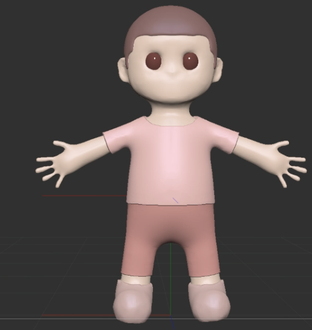
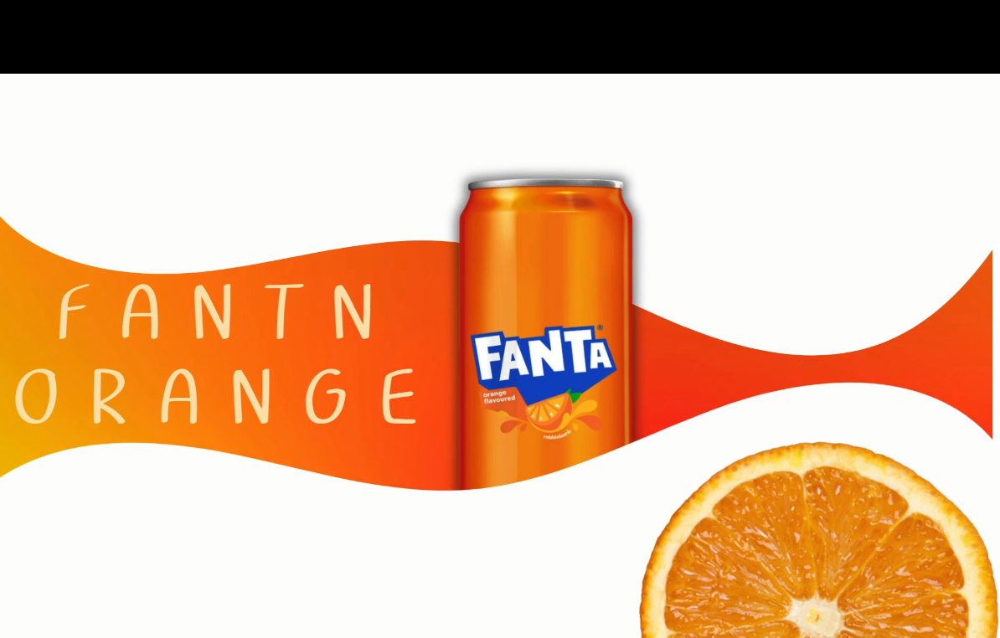
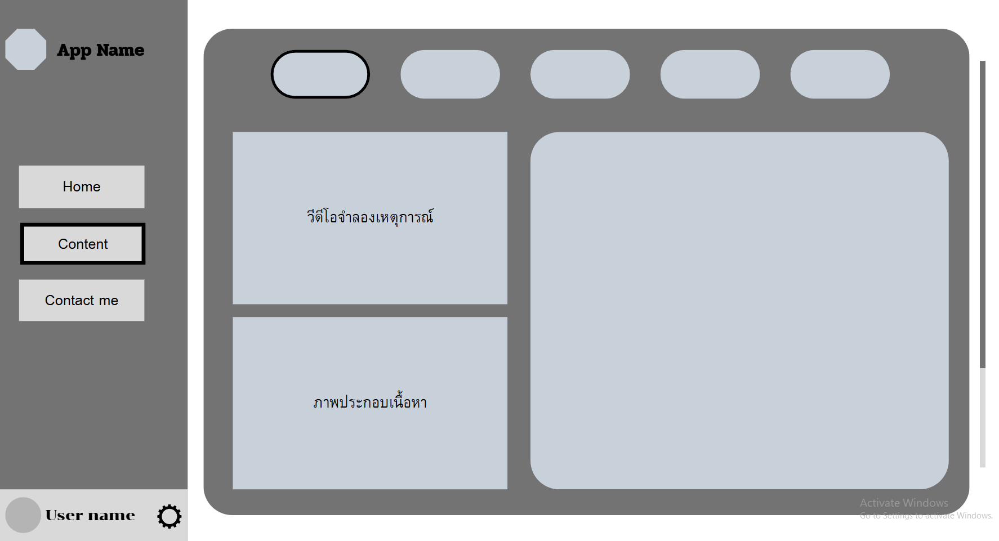

CREATIVE MEDIA WORKS
คลังผลงาน สื่อนฤมิต
รวบรวมชิ้นงานออกแบบที่ผสมผสานศาสตร์แห่งสุนทรียะและเทคโนโลยี ทั้งงาน 3D Modeling, โมชันกราฟิก, เกมอินเตอร์แอคทีฟ, และการออกแบบดิจิทัลอินเทอร์เฟซ

3D Modeling
3D Modeling
การออกแบบตัวละคร 3 มิติ ใน zbrush และเรนเดอร์ความละเอียด full HD
zbrush

Motion Graphics
FANTA
กราฟิกตัวอักษรเคลื่อนไหวสัมพันธ์กับจังหวะคลื่นเสียง สร้างความตื่นเต้นเร้าใจ
CANVA

UI/UX Design
App UI/UX
ระบบออกแบบดีไซน์ซิสเต็มและโปรโตไทป์ระดับไฮไฟดิลิทีสำหรับแอปพลิเคชัน
CANVAs
CREATIVE WORKFLOW
ทุกผลงานผ่านการวางแผนอย่างเป็นระบบ ตั้งแต่การคิดคอนเซปต์ (Ideation), การวาดสตอรี่บอร์ด (Storyboarding), การสร้าง Asset & Prototype, ไปจนถึงการทดสอบและขัดเกลาผลงานขั้นสุดท้าย (Polishing) เพื่อส่งมอบคุณค่าที่ดีที่สุด
สนใจผลงานชิ้นไหนเป็นพิเศษ?
คุณสามารถขอรับ Source File หรือชม Showreel วิดีโอความยาวเต็มได้ทางหน้าติดต่อ
สอบถามรายละเอียดผลงาน